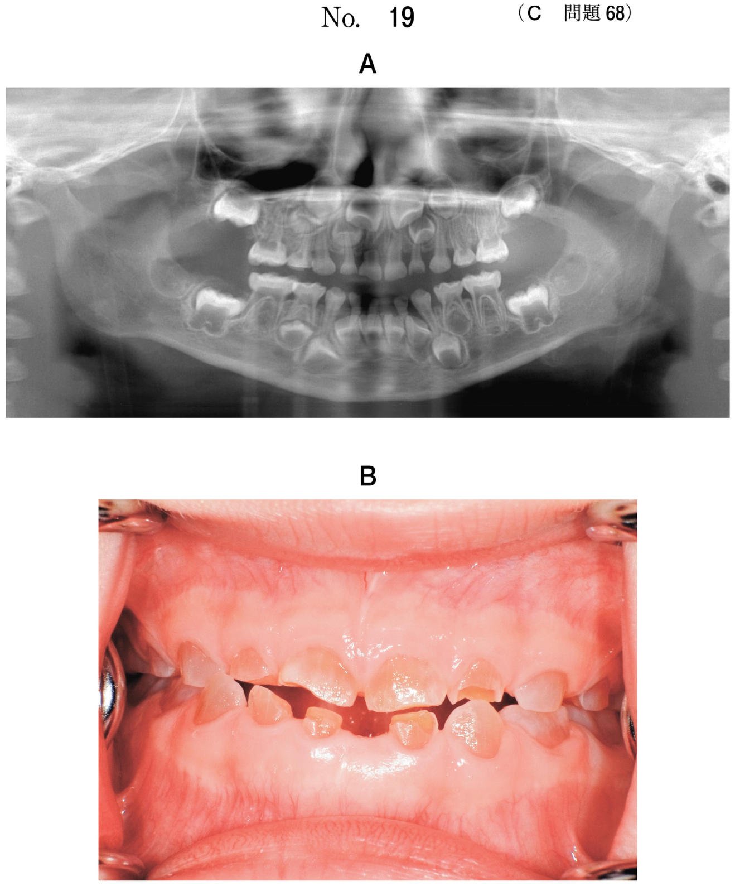
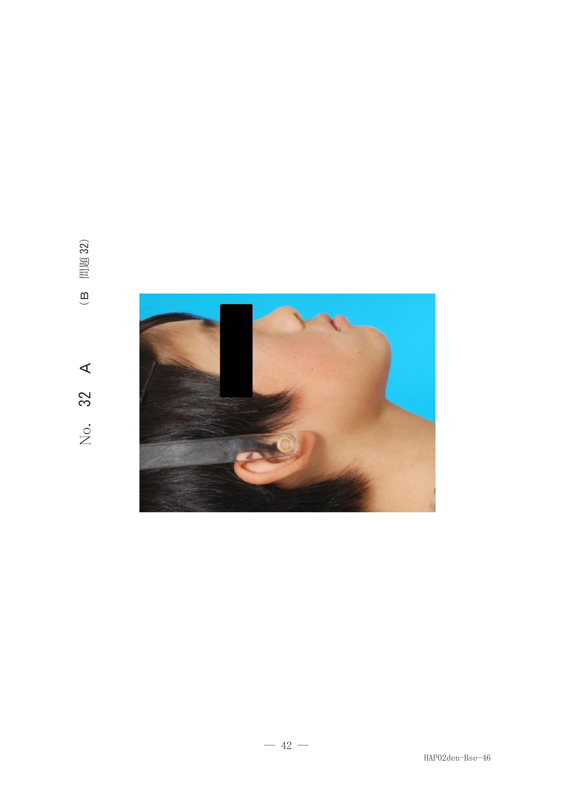
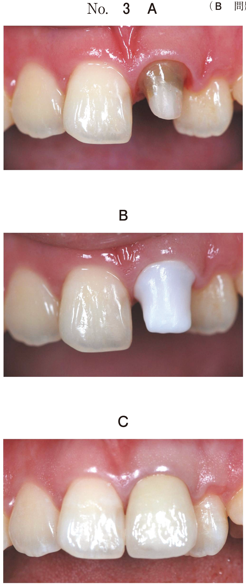
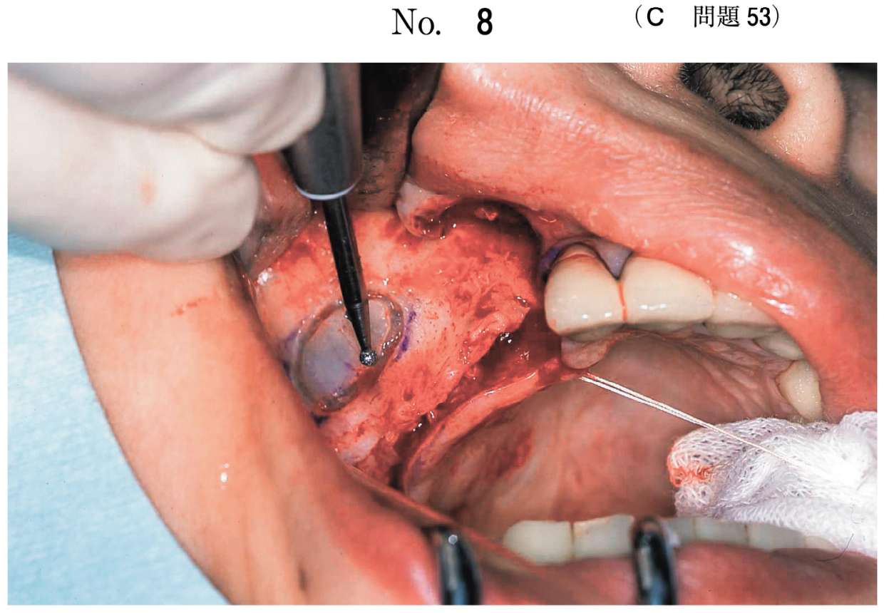

全身疾患
内分泌疾患・代謝性疾患
副甲状腺疾患
| 疾患 | 病態 | 画像所見 |
|---|---|---|
| 副甲状腺機能亢進症 | PTH過剰分泌 （腺腫、腎不全など） |
顎骨の脱灰像 歯槽硬線の消失 骨梁の粗造化 |
| 副甲状腺機能低下症 | PTH低下 →低Ca血症 |
歯の萌出遅延 エナメル質形成不全 歯槽硬線の肥厚 |
- 血液透析患者で見られる
- 腎不全 → ビタミンD不足 → 低Ca血症 → PTH分泌亢進
- 画像所見：歯槽硬線の消失、骨梁の粗造化
その他の内分泌・代謝性疾患
| 疾患 | 画像所見 |
|---|---|
| 末端肥大症 | トルコ鞍の拡大、下顎前突、舌肥大 |
| くる病・骨軟化症 | 象牙質形成不全、多数歯崩壊、骨密度低下 |
| 腎性骨異栄養症 | 骨密度低下、骨梁構造が疎 |
遺伝性疾患
鎖骨頭蓋骨異形成症
常染色体優性遺伝
- 大泉門の開存（閉鎖遅延）
- 鎖骨の形成不全・欠損
- 多数の埋伏歯、過剰歯
- 永久歯萌出遅延、乳歯晩期残存
パノラマX線で多数埋伏歯を認め、胸部X線で鎖骨異常を確認して診断
第一第二鰓弓症候群
- 小耳症（耳介形成術の既往）
- 聴力障害
- 下顎骨の低形成（片側性が多い）
- 不正咬合
その他の遺伝性疾患
| 疾患 | 遺伝形式 | 画像所見 |
|---|---|---|
| 大理石骨病 | 常染色体優性/劣性 | 全身骨の硬化性変化、病的骨折 |
| 基底細胞母斑症候群 | 常染色体優性 | 顎骨の多発性嚢胞、二分肋骨 |
| Treacher Collins症候群 | 常染色体優性 | 両側性下顎骨低形成、外耳道閉鎖 |
| Gardner症候群 | 常染色体優性 | 顎骨の多発性骨腫、大腸ポリポーシス |
その他の系統疾患
| 疾患 | 画像所見 |
|---|---|
| McCune-Albright症候群 | 骨のすりガラス様病変、皮膚色素沈着 |
| Paget骨病 | 骨のすりガラス様・綿花状病変 |
| 多発性骨髄腫 | 骨破壊（打ち抜き状） |
胸部画像検査
転移性肺腫瘍
- 頭頸部悪性腫瘍（特に腺様嚢胞癌）は肺転移が多い
- 画像所見：辺縁平滑、多発性の結節影
異物誤嚥・誤飲
- 誤嚥が疑われたら胸部・腹部X線で位置確認
- 気管分岐部より上 → 喉頭・気管
- 気管分岐部より下 → 気管支・肺
MRI禁忌
- ペースメーカー装着者
- 人工内耳
- 脳動脈クリップ（一部）
- 眼内金属異物
過去問で確認
26歳の女性。歯科治療を希望して来院した。血液透析を週に3回受けているという。初診時のエックス線写真（別冊No.33A、B）を別に示す。
エックス線写真所見との関連が考えられるのはどれか。1つ選べ。


b インスリン
c 成長ホルモン
d 甲状腺ホルモン
e 副甲状腺ホルモン
【解説】血液透析患者のX線所見。腎不全→ビタミンD不足→低Ca血症→PTH分泌亢進（二次性副甲状腺機能亢進症）。歯槽硬線の消失、骨梁の粗造化を認める。
45歳の女性。噛めないことを主訴として来院した。パノラマエックス線検査を行ったところ、全身疾患が疑われたため、胸部エックス線検査とCT検査を追加した。パノラマエックス線画像（別冊No.26A）、胸部エックス線画像（別冊No.26B）及び3D-CT（別冊No.26C）を別に示す。
考えられるのはどれか。1つ選べ。


b 大理石骨病
c 基底細胞母斑症候群
d 鎖骨頭蓋骨異形成症
e van Recklinghausen病
【解説】パノラマで多数の埋伏歯、胸部X線・3D-CTで鎖骨の形成不全を認める。鎖骨頭蓋骨異形成症の特徴的所見。
14歳の女子。不正咬合を主訴として来院した。数年前から自覚し、次第に症状が増悪しているという。5歳時に小耳症に対して耳介形成術を受けた。聴力障害も有する。初診時のエックス線写真（別冊No.46A）とCT（別冊No.46B）とを別に示す。
最も疑われるのはどれか。1つ選べ。


b 基底細胞母斑症候群
c 第一第二鰓弓症候群
d Papillon-Lefèvre症候群
e McCune-Albright症候群
【解説】小耳症（耳介形成術の既往）＋聴力障害＋不正咬合（下顎骨低形成）。第一・第二鰓弓由来の構造物の形成異常を示す第一第二鰓弓症候群。
60歳の女性。左側口底部の無痛性の腫脹を主訴として来院した。以前から不整脈があり、時々、意識消失発作を起こしていたため、1年前に治療を受けたという。内科対診時のエックス線写真（別冊No.7）を別に示す。
検査として行ってはならないのはどれか。1つ選べ。

b 造影検査
c 超音波検査
d シンチグラフィ
e 頭部後前方向撮影
【解説】胸部X線でペースメーカーを確認。ペースメーカー装着者はMRI禁忌（強磁場による誤作動・発熱の危険）。
口底部腺様嚢胞癌切除術2年後のエックス線画像（別冊No.14A）とCT（別冊No.14B）を別に示す。
矢印で示す転移部位はどれか。1つ選べ。


b 肺
c 胸膜
d 肋骨
e 縦隔リンパ節
【解説】腺様嚢胞癌は血行性転移で肺転移が多い。胸部X線・CTで肺野に多発性の結節影を認める。